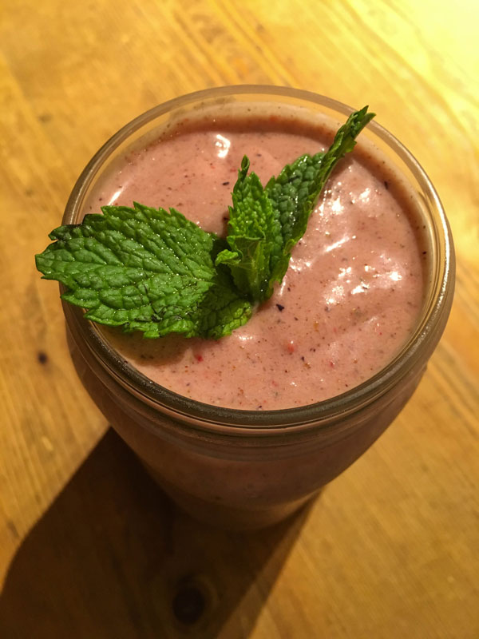

Tekočina je življenje. V obliki čiste vode ali kot prefinjena mešanica hranilnih snovi predstavlja temelj zdravega vsakdanjika. Osvežilen napitek v vročem dnevu, topel čaj v zimskih uricah, lahka juha za potešitev ali smoothie za okrepitev. Z napitkom, kot je smoothie, ne potešimo le žeje, ampak v telo vnašamo snovi, ki pripomorejo k regeneraciji celic, odpornosti imunskega sistema, boljšemu počutju, primerni sitosti in povečanju energije.
Priljubljenost smoothijev je v porastu in ta krepčilna tekočina je v resnici le drugo ime za svež in kašast napitek, pripravljen z vsakršnim mešalnikom. Zeleni napitki iz svežih in lokalno pridelanih sestavin so preprost in učinkovit vir najpomembnejših hranilnih snovi, ki jih potrebuje organizem. Različne vrste zelenjave so v tekoči obliki lahko prebavljive in se lažje absorbirajo skozi prebavni trakt. Slab liter zelenega napitka zapolni dnevne potrebe odraslega človeka po vnosu potrebnih snovi.
Za napitke, kot so zeleni, rdeči, sadni ali kateri koli drug smoothie, je ključnega pomena, da so sestavine, ki jih zmešamo, predvsem kakovostne. Sveže in lokalne sestavine hkrati pomenijo, da bo vsebnost učinkovin (na primer vitaminov A in C ter folne kisline) v sadju ali zelenjavi kar najvišja, saj se njihova vsebnost z daljšimi časi shranjevanja ali transporta več kot prepolovi.
Z uporabo ekološko pridelane zelenjave in sadja se izognemo uživanju pesticidov in nepotrebnemu odstranjevanju povrhnjice. Pri nekaterih sortah, kot so jabolka, so najbolj vitalna hranila namreč tik pod kožo.
Glavne sestavine
Zeleni listi različnih užitnih rastlin so največkrat najbolj hranilno bogati deli rastlin in s tem glavna sestavina zelenih smoothijev. Ker listi številnih rastlin vsebujejo sledi strupenih organskih spojin (alkaloidov), je priporočljivo, da krožno uživamo različne vrste – predvsem zelenje. Alkaloidi so v velikih količinah strupeni, v majhnih pa naj bi celo krepili imunski sistem.
Če si zeleni smoothie pripravljamo vsak dan, izberemo sedem ali več najdostopnejših rastlin, denimo: blitvo, kitajsko zelje, korenjevo listje, liste buč, liste kolerabe, liste kumare, liste redkve, solato vseh vrst, rukolo, ohrovt, špinačo, trtne liste, zeleno, zelje ipd. V mešalnik lahko po okusu vmešamo še nekatere divje rastline in trave (belo metliko, deteljo, divje vijolice, gozdne jagode, japonski dresnik, kislico, koprivo, regrat, vrtnico), zelišča (baziliko, koprc, koromač, limonsko travo, meto, peteršilj) in kalčke, a v manjših količinah, saj imajo večje vsebnosti alkaloidov.
Priprava zelenih smoothijev velja za enostavno, zlasti za tiste, ki zelenje jedo poredkoma. “Začetniška” mešanica lahko vsebuje več sadja, da prikrije grenak priokus zelenja, a sčasoma se človek navadi na grenkobo, ki je značilna za rastline z visoko vsebnostjo antioksidantov. Smoothiji vsebujejo za razliko od sveže stisnjenega soka še pomembne vlaknine, zaradi česar so nasitnejši. So polnovredna tekoča hrana.
Rdeče-zeleni napitek za 2 litra:- 2 skodelici špinače
- 1 zeleno jabolko
- 1 rumeno jabolko
- 1 skodelica jagod (ali drugega jagodičevja)
- 3 skodelice vode
 Slika je simbolična. |